화공기사(구) (2014-03-02 기출문제)
1과목: 화공열역학
1. 21℃, 1.4atm에서 250L의 부피를 갖고 있는 이상기체가 49℃에서 300L의 부피를 가질 때의 압력은 약 몇 atm 인가?
- 0.9
- 1.3
- 1.7
- 2.1
(정답률: 71%)

2. 1mole의 이상기체가 1기압 0℃에서 10기압으로 압축되었다. 다음 중 어느 과정을 경유하였을 때 압축 후의 온도가 가장 높겠는가?
- 등온 압축(isothermal)
- 정용 압축(isometric)
- 단열 압축(adiabatic)
- 비가역 압축(irreversible)
(정답률: 64%)
3. 다음 중 공기표준 오토사이클에 대한 설명으로 옳은 것은?
- 2개의 단열과정과 2개의 정적과정으로 이루어진 불꽃 점화 기관의 이상사이클이다.
- 정압, 정적, 단열 과정으로 이루어진 압축점화 기관의 이상사이클이다.
- 2개의 단열과정과 2개의 정압과정으로 이루어진 가스터빈의 이상사이클이다.
- 2개의 정압과정과 2개의 정적과정으로 이루어진 증기원동기의 이상사이클이다.
(정답률: 75%)
4. 10kPa인 이상기체 1mol이 등온하에서 1kPa로 팽창될 때 엔트로피의 변화는 약 몇 J/mol·K인가?
- -4.58
- 4.58
- -19.14
- 19.14
(정답률: 51%)
5. 500℃에서 1000kcal의 열을 받고, 100℃에서 남은 열을 방출하는 카르노(carnot) 동력 사이클이 열효율은 약 얼마인가?
- 80.0%
- 51.7%
- 48.3%
- 20.1%
(정답률: 66%)
6. 반응상수의 온도에 따른 변화를 알기 위하여 필요한 물성은 무엇인가?
- 반응에 관여된 물질의 증기암
- 반응에 관여된 물질이 확산계수
- 반응에 관여된 물질의 임계상수
- 반응에 수반되는 엔탈피 변화량
(정답률: 69%)
7. 다음 같은 반응이 일어나는 계에 대해 처음에 CH4 2mol, H2O 1mol, CO 1mol, H2 4mol이 있었다고 한다. 평형몰분율 yi를 반응좌표 ε의 함수로 표시하려고 할 때 총 몰수(∑ni)를 ε의 함수로 옳게 나타낸 것은?
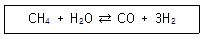
- ∑ni = 2ε
- ∑ni = 2 + ε
- ∑ni = 4 + 3ε
- ∑ni = 8 + 2ε
(정답률: 79%)
8. 수증기와 질소의 혼합기체가 물과 평형에 있을 때 자유도수는?
- 0
- 1
- 2
- 3
(정답률: 72%)
9. A함량 30mol%인 A와 B의 혼합용액이 A함량 60mol%인 A와 B의 혼합증기와 평형상태에 있을 때 순수 A증기압/순수 B증기압 비는?
- 6/4
- 3/7
- 78/28
- 7/2
(정답률: 52%)
10. 실험실에서 부동액으로서 30mol% 메탄올 수용액 4L를 만들려고 한다. 25℃의 물과 메탄올을 각각 몇 L씩 섞어야 하는가?
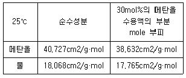
- 메탄올 = 2.000L, 물 = 2.000L
- 메탄올 = 2.034L, 물 = 2.106L
- 메탄올 = 2.064L, 물 = 1.936L
- 메탄올 = 2.100L, 물 = 1.900L
(정답률: 57%)
11. 다음의 관계식을 이용하여 기체의 정압 열용량과 정적 열용량 사이의 일반식을 구하면?
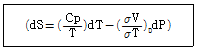
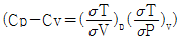
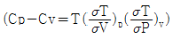
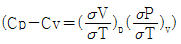
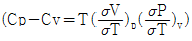
(정답률: 59%)
12. 성분1과 성분2가 기-액 평형을 이루는 계에 대하여 라울(Raoult)의 법칙을 만족하는 기포점 압력 계산을 수행하였다. 계산결과에 대한 설명 중 틀린 것은?
- 기포점 입력계산으로 P-x-y 선도를 나타낼 수 있다.
- 기포점 압력 계산 결과에서 기상의 조성선은 직선이다.
- 성분 1의 조성이 1일 때의 압력은 성분 1의 증기압이다.
- 공비점의 형성을 나타낼 수 없다.
(정답률: 42%)
13. 화학반응이 자발적으로 일어날 때 깁스(Gibbs)에너지와 엔트로피의 변화량을 옳게 표시한 것은? (단, △G계 : 계의 깁스자유에너지 변화, △Stotal : 계와 주위 전체의 엔트로피 변화)
- (△G계)T.P < 0, △Stotal > 0
- (△G계)T.P > 0, △Stotal > 0
- (△G계)T.P = 0, △Stotal = 0
- (△G계)T.P > 0, △Stotal < 0
(정답률: 67%)
14. 어떤 화학반응에서 평형상수의 온도에 대한 미분계수는
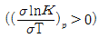
으로 표시된다. 이 반응에 대한 설명으로 옳은 것은?- 이 반응은 흡열반응이며 온도상승에 따라 K값은 커진다.
- 이 반응은 흡열반응이며 온도상승에 따라 K값은 작아진다.
- 이 반응은 발열반응이며 온도상승에 따라 K값은 커진다.
- 이 반응은 발열반응이며 온도상승에 따라 K값은 작아진다.
(정답률: 61%)
15. 벤젠과 툴루엔은 이상용액에 가까운 용액을 만든다. 80℃에서 벤젠의 증기압은 753mmHg, 톨루엔의 증기압은 290mmHg 이다. 벤젠과 톨루엔의 몰비율이 1 : 1인 혼합용액의 80℃에서의 증기의 전압은 약 몇 mmHg 인가?
- 700
- 500
- 300
- 100
(정답률: 73%)
16. 2성분계 공비 혼합물에서 성분 A, B의 활동도 계수를 γA와 γB, 증기압을 PA 및 PB라하고 이 계의 전압을 PT라 할 때 γB를 옳게 나타낸 것은? (단, B성분의 기상 및 액상에서의 몰분율은 yB와 XB이며, 퓨개시티계수
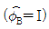
이라 가정한다.)- γB= PT/PB
- γB= P1/PB(1-XA)
- γB= P1yB/PB
- γB= PT/PBXB
(정답률: 50%)
17. 다음 그림은 순수한 성분의 온도-압력의 관계를 나타낸 그림이다. 이 그림에서 유체의 초임계영역은 어디인가?
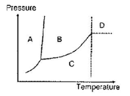
- A 영역
- B 영역
- C 영역
- D 영역
(정답률: 80%)
18. 다음 그림은 A, B-2 성분계 용액에 대한 1기압 하에서의 온도-농도간의 평행관계를 나타낸 것이다. A의 몰분율이 0.4인 용액을 1기압 하에서 가열할 경우, 이 용액의 끓는 온도는 몇 ℃인가? (단, XA는 액상 몰분률이고, yA는 기상 몰분률이다.)
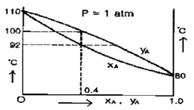
- 80℃
- 80℃부터 92℃까지
- 92℃부터 100℃까지
- 110℃
(정답률: 75%)
19. 다음 그림은 A, B 2성분 용액의 H-X 선도이다. XA=0.4 일 때의 A의 부분몰 엔탈피
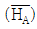
는 몇 cal/mol 인가?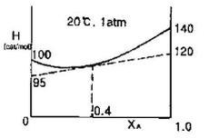
- 95
- 100
- 120
- 140
(정답률: 55%)
20. 기체터빈 동력장치가 압축비 PA : PB=1 : 6에서 운전되며 γ=1.4인 경우 이상기체의 사이클 효율 η는?
- 0.2
- 0.4
- 0.6
- 0.8
(정답률: 54%)
2과목: 단위조작 및 화학공업양론
21. 다음 중 Hess의 법칙과 가장 관련이 있는 함수는?
- 비열
- 열용량
- 엔트로피
- 반응열
(정답률: 56%)
22. 반데르발스(van der Waals) 상태방정식을 다음과 같이 나타내었다. P의 단위 N/m2, n의 단위 kmol, V의 단위 m3, T의 단위 K로 표시하였을 때 상수 a의 단위는?
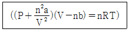
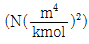
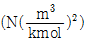
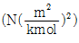
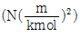
(정답률: 54%)
23. 1기압 20℃의 공기가 10L의 용기에 들어있다. 공기 중 산소만 제거하여 전체 체적을 질소만 차지한다면 압력은 약 몇 mmHg 가 되는가? (단, 공기는 질소 79%, 산소 21%로 되어 있다.)
- 160
- 510
- 600
- 760
(정답률: 67%)
24. 450K, 500kPa 에서의 공기 밀도로 옳은 값은? (단, 공기의 평균 분자량은 29이다.)
- 3.877 kg/m3
- 0.126 kg/m3
- 1.126 g/cm3
- 3877 g/cm3
(정답률: 60%)
25. 20wt%소금수용액의 밀도가 10℃에서 1.20g/mL 이다. 소금의 몰분율과 노르말농도는 각각 얼마인가? (단, NaCl 분자량은 58이다.)
- 0.072, 4.31N
- 0.38, 4.31N
- 0.072, 4.14N
- 0.38, 4.14N
(정답률: 42%)
26. 1atm, 25℃에서 상대습도가 50%인 공기 1m3 중에 포함되어 있는 수중기의 양은? (단, 25℃에서의 수증기압은 24mmHg이다.)
- 11.6g
- 12.5g
- 28.8g
- 51.5g
(정답률: 40%)
27. 같은 온도에서 같은 부피를 가진 수소와 산소의 무게의 측정값이 같았다. 수소의 압력이 4atm 이라면 산소의 압력은 몇 atm 인가?
- 4
- 1
- 1/4
- 1/8
(정답률: 66%)
28. 에탄과 메탄으로 혼합된 연료가스가 산소와 질소 각각 50mol%씩 포함된 공기로 연소된다. 연소 후 연소가스 조성은 CO2 25mol%, N2 60mol%, O2 15mol% 이었다. 이때 연료가스 중 메탄의 mol%는 얼마인가?
- 25.0
- 33.3
- 50.0
- 66.4
(정답률: 43%)
29. 양대수좌표(log-log graph)에서 직선이 되는 식은?
- Y = bxa
- Y = bexa
- Y = bx + a
- logY = logb + ax
(정답률: 49%)
30. 82℃에서 벤젠의 증기압은 811mmHg이고 톨루엔의 증기압은 314mmHg이다. 벤젠과 톨루엔의 혼합용액은 이상용액이라면 벤젠 20mol%와 톨루엔 80mol%를 포함하는 용액을 증발시켰을 때 증기 중의 벤젠의 몰분율은?
- 0.362
- 0.372
- 0.382
- 0.392
(정답률: 61%)
31. 노벽과 두께가 200mm이고, 그 외측은 75mm의 석면판으로 보온되어 있다. 노벽의 내부온도가 400℃이고, 외측온도가 38℃일 경우 노벽의 면적이 10m2라면 열손실은 약 몇 kcal/h인가? (단, 노벽과 석면판의 평균 열전도도는 각각 3.3, 0.13kcal/m·h·℃이다.)
- 3070
- 5678
- 15300
- 30600
(정답률: 51%)
32. 자유표면이 있는 액체가 경사면을 흘러가고 있다. 속도구배가 완전히 발달한 층류로 층의 두께가 일정하다고 할 떄의 층의 두께는 1mm이다. 액체부하를 포함하여 다른 조건이 동일하고 유체의 밀도만 2배가 될 때의 층의 두께는 약 얼마인가?
- 0.53mm
- 0.63mm
- 1.59mm
- 2.59mm
(정답률: 26%)
33. 다음 중 일반적으로 가장 작은 크기로 입자를 축소시킬 수 있는 장치는?
- 칼날 절단기(knife cutter)
- 죠파쇄기(jaw crusher)
- 선회파쇄기(gyratory crusher)
- 유체-에너지 밀(fluid-energy mill)
(정답률: 51%)
34. 40℃의 물의 점도는 0.00654g/cm·s이고 열전도도는 0.539kcal/m·h·℃이다. 이 때 물의 Prandtl number 는?
- 2.34
- 4.37
- 5.14
- 9.58
(정답률: 38%)
35. A와 B의 혼합용액에서 r를 활동도 계수라 할 때 최고 공비 혼합물이 가지는 r값의 범위를 옳게 나타낸 것은?
- rA=1, rB=1
- rA＜1, rB＞1
- rA＜1, rB＜1
- rA＞1, rB＞1
(정답률: 43%)
36. 다음 효용 증발조직의 목적으로 다음 중 가장 중요한 것은?
- 열을 경제적으로 이용하기 위한 것이다.
- 제품의 순도를 높이기 위한 것이다.
- 작업을 용이하게 하기 위한 것이다.
- 장치비를 절약하기 위한 것이다.
(정답률: 51%)
37. 그림과 같은 3성분계에서의 평형곡선에 대한 설명으로 옳은 것은?
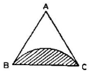
- A와 B는 잘 섞이지 않는다.
- B와 C는 잘 섞이지 않는다.
- C와 A는 잘 섞이지 않는다.
- 빗금친 부분에서 A, B, C 는 완전혼합이다.
(정답률: 60%)
38. 진공 증발을 사용하는 이유로 가장 거리가 먼 것은?
- 증발기의 크기를 증가시킨다.
- 비점을 내려가게 한다.
- 증기를 경제적으로 이용할 수 있게 한다.
- 열민감 제품의 변질을 방지한다.
(정답률: 46%)
39. 기포탑(bubble tower)과 비교한 충전탑의 특성과 거리가 먼 것은?
- 구조가 간단하다.
- 편류가 형성되는 단점이 있다.
- 부식 및 압력에 의한 문제점이 크다.
- 충전물에 오염물이 부착될 수 있는 단점이 있다.
(정답률: 39%)
40. 건조조작에서 임계함수율(critical moisture content)을 옳게 설명한 것은?
- 건조 속도가 0 일 때의 함수율이다.
- 감률 건조기간이 끝날 때의 함수율이다.
- 함률 건조기간에서 감률 건조기간으로 바뀔 때의 함수율이다.
- 건조조작이 끝날 때의 함수율이다.
(정답률: 69%)
3과목: 공정제어
41. 전달함수 G(s)=e-2s에 대한 주파수 응답에 있어 위상지연각(phase lag)은? (단, radian frequency(w)=1[rad/time] 이다.)
- 28.7°
- 57.3°
- 114.6°
- 287.0°
(정답률: 20%)
42. 전달함수가
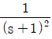
인 2차계이 단위충격응답(unitimpuise response)에서 1분 후의 값은 2분 후의 값의 몇 배인가?- e
- e/2
- e2/2
- 2e2
(정답률: 42%)
43. 그림 (a)와 (b)가 등가이기 위한 블록선도 (b)에서의 m의 값은?
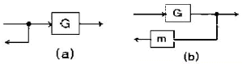
- G
- 1/G
- G2
- 1-G
(정답률: 56%)
44. 다음 중 제어계의 안전성을 판별하는 방법과 가장 관련이 없는 것은?
- Bode 선도
- Routh array
- Nyquist 선도
- Analog 회로
(정답률: 67%)
45. Routh array에 의한 안전성 판별법 중 옳지 않은 것은?
- 특성방정식의 계수가 다른 부호를 가지면 불안정하다.
- Routh array의 첫 번째 컬럼의 부호가 바뀌면 불안정하다.
- Routh array test를 통해 불안정한 Pole의 개수도 알 수 있다.
- Routh array의 첫 번째 컬럼에 0이 존재하면 불안정하다.
(정답률: 40%)
46. PID 제어기에 관한 설명 중 옳지 않은 것은?
- Reset windup 현상은 I-모드를 사용할 때 발생하며 자동 모드로 Startup 할 때 많이 발생한다.
- 제어출력이 증가할 때 공정출력이 감소하는 공정일 경우, 비례이득의 부호는 양이 되어야 한다.
- Bumpless transfer란 수동에서 자동으로 또 자동에서 수동으로 변환될 때 제어기 출력의 bias value를 현재 MV값으로 바꾸어 주는 동작을 말한다.
- Derivative kick은 오차에 대한 미분(de/dt)을 측정변수의 이분(-dy/dt)으로 대체하면 제거할 수 있다.
(정답률: 34%)
47. 다음 중 폐회로 응답에서 PD제어보다는 overshoot이 크지만 다른 양식보다는 작고, 잔류편차가 완전히 제거되는 제어양식은?
- P 방식제어
- PI 방식제어
- PID 방식제어
- I 방식제어
(정답률: 29%)
48. 다음 중 Ziegler-Nichols 제어기 조율법에 관한 설명으로 가장 옳은 것은?
- 폐회로의 계단응답이 대략 1/4 DR(decay ratio)를 갖도록 설계된 조율법으로, 화학공정제어에서 지나치게 큰 진동을 주는 경우가 있다.
- 공정의 정상상태 이득을 아는 것은 제어기 조율의 정확성을 증진시킨다.
- 공정 G(s)에 사용할 PI 제어기
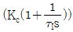
를 조율하는 경우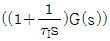
의 임계이득(ultimate gain)과 임계주파수(ultimate frequency)를 구하여 활용한다. - 같은 차수의 공정은 동일한 Z-N 조율 값을 보인다.
(정답률: 32%)
49. 그림과 같이 표시되는 함수의 Laplace 변환은?
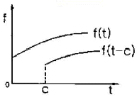
- e-csL[f]
- ecsL[f]
- L[f(s-c)]
- L[f(s+c)]
(정답률: 45%)
50. 시간상수 τ가 3초이고 이득 Kp가 1이며 1차공정의 특성을 지닌 온도계가 초기에 20℃를 유지하고 있다. 이 온도계를 100℃의 물속에 넣었을 때 3초 후의 온도계 읽음은?
- 68.4℃
- 70.6℃
- 72.3℃
- 81.9℃
(정답률: 37%)
51. 안정한 1차계의 계단응답에서 시간이 시정수(time constant)의 3배가 되면 응답은 최대 값의 몇 %에 도달되는가?
- 83.2%
- 89.2%
- 92.3%
- 95%
(정답률: 42%)
52. 전달함수가
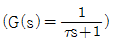
인 1차계에 크기 M인 계단변화가 도입되었을 때의 응답은? (단, 정상상태는 0으로 간주한다.)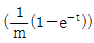
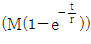
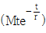
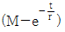
(정답률: 58%)
53. 다음 중 ATO(Air-To-Open) 제어밸브가 사용되어야 하는 경우는?
- 저장 탱크 내 위험물질의 증발을 방지하기 위해 설치된 열교환기의 냉각수 유량 제어용 제어밸브
- 저장 탱크 내 물질의 응고를 방지하기 위해 설치된 열교환기의 온수 유량 제어용 제어밸브
- 반응기에 발열을 일으키는 반응 원료의 유량 제어용 제어밸브
- 부반응 방지를 위하여 고온 공정 유체를 신속히 냉각시켜야 하는 열교환기의 냉각수 유량 제어용 제어밸브
(정답률: 50%)
54. 다음 전달함수를 역변환한 것은?
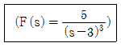
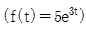
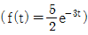
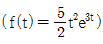
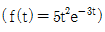
(정답률: 54%)
55. 함수 f(t)의 Laplace 변환이 다음과 같이 주어졌을 때, f(0)의 값을 구하면?
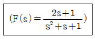
- 0.5
- 1
- 2
- 3
(정답률: 50%)
56. 공정이득(gain)이 2인 공정을 설정치(set point)가 1이고 비례이득(Proportional gain)이 1/2인 비례(Proportional) 제어기로 제어한다. 이 때 오프셋은 얼마인가?
- 0
- 1/2
- 3/4
- 1
(정답률: 51%)
57. 다음 중 Gain margin(이득마진)과 관계되는 수식은? (w는 frequency이며 w∞는 Phase lag가 -180° 일 때의 w이다. GOL은 안정도 판정에 사용되는 개루프 전달함수이고, G는 공정전달함수이다.)
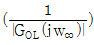
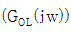
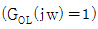
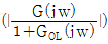
(정답률: 24%)
58. 이상적인 PID 제어기
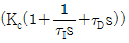
이 실용적인 PID 제어기가 되기 위해서는 여러 변형이 가해진다. 이중 옳지 않은 것은?- 설정치의 일부만을 비례동작에 반영 : KcE(s)=Kc(R(s)-Y(s))→Kc(αR(s)-Y(s)), 0≤α≤1
- 설정치의 일부만을 적분동작에 반영 :
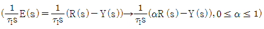
- 설정치를 미분하지 않음 : τDsE(s)=τDs(R(s)-Y(s))→-τDsY(s)
- 미분동작의 잡음에 대한 민감성을 완화시키기 위한 filltered 미분동작 :
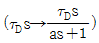
(정답률: 26%)
59. 전형적인 제어루프에 관한 설명 중 틀린 것은?
- 가스크로마토그래피로 측정되는 농도제어 루프의 경우 긴 시간지연을 보이게 된다.
- 동적응답이 느린 온도제어루프는 미분동작을 추가하여 성능향상을 얻을 수 있다.
- 적분공정 형태이 액위 제어루프에는 비례동작보다는 적분동작을 위주로 설계 되어야 한다.
- 매우 빠른 동특성과 측정 노이즈가 심한 유량제어 루프에는 비례-적분 제어기가 추천된다.
(정답률: 45%)
60. 전달함수에 관한 설명으로 틀린 것은?
- 보통 공정(Usual Process)의 경우 분모의 차수가 분자의 차수보다 크다.
- 공정출력의 Laplace 변환을 공정입력의 Laplace 변환으로 나눈 것이다.
- 공정입력과 공정출력사이의 동특성(Dynamics)을 Laplace 영역에서 표시한 것이다.
- 비선형공정과 선형공정 모두 전달함수로 완벽하게 표현될 수 있다.
(정답률: 59%)
4과목: 공업화학
61. 인광석을 산분해하여 인산을 제조하는 방식 중 습식법에 해당하지 않는 것은?
- 황산 분해법
- 염산 분해법
- 질산 분해법
- 아세트산 분해법
(정답률: 57%)
62. 다음 중 아세틸렌에 작용시키면 아세틸렌법으로 염화비닐이 생성되는 것은?
- HCl
- NaCl
- H2SO4
- HOCl
(정답률: 65%)
63. 소금을 전기분해하여 하루에 1ton의 염소가스를 생산하는 전해 수산화나트륨 공장이 있다. 이 공장에서 생산되는 NaOH는 하루에 약 몇 ton 인가?
- 1.13
- 2.13
- 3.13
- 4.13
(정답률: 44%)
64. 순도가 70%인 아염소산나트륨의 유효염소는 몇 %인가?
- 100
- 110
- 120
- 130
(정답률: 31%)
65. 접착속도가 매우 빨라서 순간접착제로 흔히 사용되는 성분은?
- 시아노아크릴레이트
- 아크릴에멀젼
- 벤조퀴논
- 폴리이소부틸렌
(정답률: 51%)
66. 염산제조에 있어서 단위 시간당 흡수되는 HCl 가스량(G)을 나타낸 식으로 옳은 것은? (단, K:HCl 가스 흡수계수, A:기상-액상의 접촉면적, △P:기상-액상과의 HCl 분압차이다.)
- G=K2A
- G=K△P
- G=K/A△P
- G=KA△P
(정답률: 59%)
67. 연료전지에 쓰이는 전해질이 아닌 것은?
- 인산
- 자르코늄 다이옥사이드
- 용융탄산염
- 테프론 고분자막
(정답률: 44%)
68. 다음 중 기하이성질체를 나타내는 고분자가 아닌 것은?
- 폴리부타디엔
- 폴리클로로프렌
- 폴리이소프렌
- 폴리비닐알콜
(정답률: 35%)
69. 질소비료는 주로 어떤 형태로 식물에 흡수되는가?
- NO2-
- N2
- NO3-
- NH4OH
(정답률: 47%)
70. 아닐린(aniline)을 출발물질로 하여 염화벤젠디아조늄을 생성하는 디아조화 반응과 관계가 없는 것은?
- 염화수소
- 에틸렌
- 아질산나트륨
- 방향족 1차 이민
(정답률: 36%)
71. 니트로벤젠을 환원시켜 아닐린을 얻을 때 다음 중 가장 적합한 환원제는?
- Zn+Water
- Zn+Acid
- Alkaline Sulfide
- Zn+Alkali
(정답률: 59%)
72. 황산을 mSO3nH2O로 표시할 때 발연황산을 나타낸 것은?
- m ＞n
- m = n
- m＜ n
- m + n = 3
(정답률: 56%)
73. pH가 2인 공장 폐수 내에 Cu+2, Zn+2 등의 중금속이온이 다량 함유되어 있다. 이들을 중화처리할 때 중금속이온은 수산화물 형태로 대부분 침전되어 제거되지만, 입자의 크기가 작은 경우에는 콜로이드상태로 존재하게 되므로 응집제를 사용하여야 한다. 이와 같은 폐수처리과정에서 필요한 물질들을 옳게 나열한 것은?
- NaOH, H2SO4
- H2SO4, FeCl3
- H2SO4, Al2(SO4)3·18H2O
- CaO, Al2(SO4)3·18H2O
(정답률: 31%)
74. 다음 중 p형 반도체를 제조하기 위해 실리콘에 소량 첨가하는 물질은?
- 비소
- 안티몬
- 인듐
- 비스무스
(정답률: 47%)
75. 다음 중 2차 전지에 해당하는 것은?
- 망간전지
- 산화은전지
- 납축전지
- 수은전지
(정답률: 47%)
76. 산화하여 아세톤이 되는 것은?
- CH3CH2CH2OH
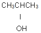
- CH3CH2CHO
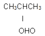
(정답률: 46%)
77. 암모니아 합성공정에 있어서 촉매 1m2 당 1시간에 통과하는 원료가스(0℃, 760mmHg 환산)의 m2 수를 무엇이라고 하는가?
- 순간속도
- 공시득량
- 공간속도
- 원단위
(정답률: 50%)
78. 접촉식 황산제조 공정에서 전화기에 대한 설명 중 옳은 것은?
- 전화기 조작에서 온도조절이 좋이 않아서 온도가 지나치게 상승하면 전화율이 감소하므로 이에 대한 조절이 중요하다.
- 전화기는 SO3 생성열을 제거시키며 동시에 미반응 가스를 냉각시킨다.
- 촉매의 온도는 200℃ 이하로 운전하는 것이 좋기 때문에 열교환기의 용량을 증대시킬 필요가 있다.
- 전화기의 열교환방식은 최근에는 거의 내부 열교환방식을 채택하고 있다.
(정답률: 43%)
79. 유지 성분의 공업적 분리 방법으로 다음 중 가장 거리가 먼 것은?
- 분별결정법
- 원심분리법
- 감압증류법
- 분자증류법
(정답률: 38%)
80. R-COOH와 SOCl2 또는 PCl5를 반응시킬 때 주성생물은?
- R-Cl
- R-CH2Cl
- R-COCl
- R-CHCl2
(정답률: 55%)
5과목: 반응공학
81. 자기 촉매 반응에서 목표 전환율이 반응속도가 최대가 되는 반응 전환율보다 낮을 때 사용하기에 유리한 반응기는? (단, 반응생성물의 순환이 없는 경우이다.)
- 혼합 반응기
- 플러그 반응기
- 직렬 연결한 혼합 반응기와 플러그 반응기
- 병렬 연결한 혼합 반응기와 플러그 반응기
(정답률: 48%)
82. 1/2차 반응을 수행하였더니 액체 반응 물질이 10분간에 75%가 분해되었다. 같은 조건하에서 이 반응을 완결하는데 시간은 몇 분이나 걸리겠는가?
- 20
- 25
- 30
- 35
(정답률: 32%)
83. A→R인 반응기 부피가 0.1L인 플러그 흐름 반응기에서 -rA=50CA2 mol/L·min 로 일어난다. A의 초기농도 CAO 는 0.1mol/L 이고 공급속도가 0.⑤L/min 일 때 전화율은 얼마인가?(오류 신고가 접수된 문제입니다. 반드시 정답과 해설을 확인하시기 바랍니다.)
- 0.509
- 0.609
- 0.809
- 0.909
(정답률: 36%)
84. 촉매의 기능에 관한 설명으로 옳지 않은 것은?
- 촉매는 화학평형에 영향을 미치지 않는다.
- 촉매는 반응속도에 영향을 미친다.
- 촉매는 화학반응의 활성화에너지를 변화시킨다.
- 촉매는 화학반응의 양론식을 변화시킨다.
(정답률: 52%)
85. 다음과 같은 단분자형의 1차 연속 반응이 회분식 반응기에서 일어난다. 공급물에서의 생성물 R과 S의 농도가 모두 0 일 때 k1=0.⑤s-1, k2=0.⑤s-1이고, 이 때 R은 목적하는 생성물, S는 목적하지 않는 생성물이다. 반응이 30초가 경과했을 때의 초기농도에 대한 A의 농도비 CA/CAO는 얼마인가?
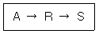
- 0.012
- 0.022
- 0.223
- 0.243
(정답률: 31%)
86. 다음 중 고체촉매반응의 반응 7단계의 순서로 올바른 것은?
- 외부확산→내부확산→흡착→표면반응→탈착→내부확산→외부확산
- 내부확산→외부확산→흡착→표면반응→탈착→내부확산→외부확산
- 내부확산→외부확산→탈착→표면반응→흡착→외부확산→내부확산
- 외부확산→흡착→내부확산→표면반응→내부확산→탈착→외부확산
(정답률: 40%)
87. 반감기가 20h인 어떤 방사성 유체를 200L/h의 속도로 각각 용적이 40000L인 2개의 직렬교반조를 통과하여 처리하였다. 이 반응기를 통과함으로써 방사능은 몇 % 감소되는가? (단, 방사선 붕괴를 1차반응으로 간주한다.)
- 95.8%
- 96.8%
- 97.8%
- 98.4%
(정답률: 26%)
88. 다음은 n차(n＞0) 단일 반응에 대한 한 개의 혼합 및 플러그 흐름 반응기 성능을 비교 설명한 내용이다. 옳지 않은 것은? (단, Vm은 혼합흐름반응기 부피, Vp는 플러그흐름반응기 부피를 나타낸다.)
- Vm은 Vp 보다 크다.
- Vm/Vp는 전환율의 증가에 따라 감소한다.
- Vm/Vp는 반응차수에 따라 증가한다.
- 부피변화 분율이 증가하면 Vm/Vp가 증가한다.
(정답률: 38%)
89. 다음과 같은 경쟁반응에서 원하는 반응을 가장 좋게 하는 접촉방식은? (단, n＞P, m＜Q)
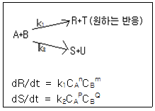
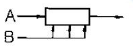
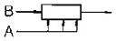
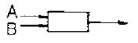
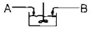
(정답률: 52%)
90. 반응기에 유입되는 물질량의 체류시간에 대한 설명으로 옳지 않은 것은?
- 반응물의 부피가 변하면 체류시간이 변한다.
- 반응물이 실제의 부피 유량으로 흘러 들어가면 체류시간이 달라진다.
- 액상반응이면 공간시간과 체류시간이 같다.
- 기상반응이면 공간시간과 체류시간이 같다.
(정답률: 48%)
91. 다음 그림은 이상적 반응기의 설계 방정식의 반응시간을 결정하는 그림이다. 회분 반응기의 반응시간 t=(면적)인데 이에 해당하는 면적을 옳게 나타낸 것은?
(정답률: 45%)
92. 다음 그림은 균일계 비가역 병렬 반응이 플러그 흐름반응기에서 진행될 때 순간수율 ø(R/A)와 반응물의 농도 (CA)간의 관계를 나타낸 것이다. 빗금친 부분의 넓이가 뜻하는 것은?
- 총괄 수율ø
- 반응하여 없어진 반응물의 몰수
- 반응으로 생긴 R의 몰수
- 반응기를 나오는 R의 농도
(정답률: 35%)
93. 다음 그림은 어느 반응의 농도변화를 나타낸 그림인가?
(정답률: 17%)
94. 기상 촉매반응의 유효인자(effectiveness factor)에 영향을 미치는 인자로 다음 중 가장 거리가 먼 것은?
- 촉매 입자의 크기
- 촉매 반응기의 크기
- 반응기 내의 전체 압력
- 반응기 내의 온도
(정답률: 48%)
95. 다음과 같은 A의 분해반응에서 원하는 생성물은 T이다. 등온 플러그 흐름 반응기에서 얻을 수 있는 T의 최대 농도는 얼마인가? (단, CAO=1 이다.)
- 0.⑤1
- 0.114
- 0.235
- 0.391
(정답률: 16%)
96. 어떤 반응의 속도상수가 25℃에서 3.46×10-5s-f이며 62℃에서는 4.91×10-3s-1이었다. 이때 활성화 에너지는 몇 kcal 인가?
- 44.75
- 34.75
- 24.79
- 14.75
(정답률: 47%)
97. 부피유량 u가 일정한 관형반응기 내에서 1차 반응 A→B 이 일어난다. 부피유량이 10L/min, 반응속도상수 k가 0.23/min일 때 유출농도를 유입농도의 10% 로 줄이는데 필요한 반응기의 부피는? (단, 반응기의 입구조건 V=0 일 떄 CA=CAO 이다.)
- 100L
- 200L
- 300L
- 400L
(정답률: 36%)
98. 현재의 혼합흐름 반응기를 부피가 2배인 것으로 교체하고자 한다. 같은 공급물을 동일한 공급 속도로 공급한다면 교체 후의 새로운 전화율은 얼마인가? (단, 반응속도 A→R, -rA=kCA 로 나타내며 현재의 전화율은 50% 이다.)
- 0.33
- 0.56
- 0.67
- 0.78
(정답률: 45%)
99. 고채 촉매 기상반응 A+B→C에서 초기속도 대전압(total pressure)의 plot는 보기의 그림과 같은 경우들이 있다. 반응물 A 및 B 모두가 촉매에 흡착된 후에 반응을 하며 표면반응이 율속단계일 경우 (surface reaction control)인 것은?
(정답률: 33%)
100. C5H5CH3+H2→C5H5+CH4의 틀루엔과 수소의 반응은 매우 빠른 반응이며 생성물은 평형 상태로 존재한다. 틀루엔의 초기 농도가 2mol/L, 수소의 초기 농도가 4mol/L이고 반응을 900K에서 진행 시켰을 때 반응 후 소소의 농도는 약 몇 mol/L인가? (단, 900K에서 평형상수 Kp=227 이다.)
- 1.89
- 1.95
- 2.01
- 4.04
(정답률: 27%)
P1V1/T1 = P2V2/T2
여기서 P1 = 1.4 atm, V1 = 250 L, T1 = 21℃ + 273.15 = 294.15 K, P2 = ?, V2 = 300 L, T2 = 49℃ + 273.15 = 322.15 K 이다.
따라서,
1.4 x 250/294.15 = P2 x 300/322.15
P2 = 1.3 atm (소수점 첫째 자리에서 반올림)
따라서 정답은 "1.3" 이다.